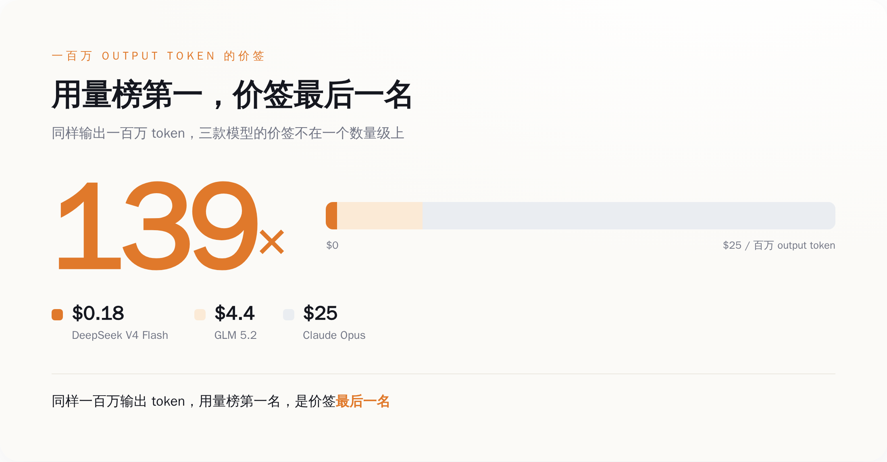
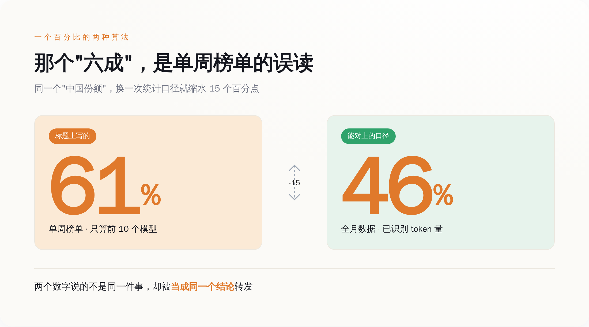
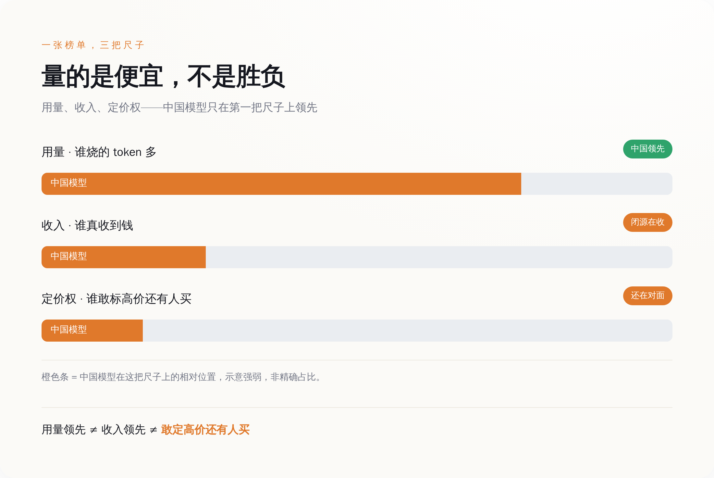

一、榜单登顶那天，价签是一毛八
先搞清楚"用量第一"这四个字，到底在说什么。
OpenRouter 是个模型路由平台，你可以理解成 AI 模型的一个大集市，全世界的开发者在上面挑模型、发请求。它会统计每个模型被消耗了多少 token，排个榜。所谓"中国模型用量登顶"，说的就是在这个集市里，被点得最多的那几个摊位，现在挂的是中文招牌。
排在最前面的摊位，叫 DeepSeek V4 Flash。2026 年 4 月 24 日发布，284B 总参数、13B 激活的 MoE 架构，100 万 token 上下文，MIT 协议开源，权重直接甩 Hugging Face 上让你随便下。这串参数你一个都不用记，翻译过来就一句话：个头够大、能打、还免费。真正要你盯住的是它的价签——官方定价页写得清清楚楚：输入 0.09 美元、输出 0.18 美元，每百万 token。缓存命中的部分，按输入价的两折算。
另一个被 OpenRouter 在六月报告里点名的中国摊位，是智谱的 GLM 5.2，六月中发布，744B 总参数、约 40B 激活，同样 100 万上下文，同样 MIT 开源。价签稍微贵点：输入 1.4 美元、输出 4.4 美元。
然后你回头看闭源那一桌。Claude Opus 4.5，输入 5 美元、输出 25 美元；往下一档的 Claude Sonnet 4.5，也要 3 美元和 15 美元。
把价签摆一排，账就出来了：DeepSeek V4 Flash 的输出价，是 Claude Opus 的 1/139；就算跟同为中国开源、定价偏高的 GLM 5.2 比，也便宜到人家的零头。这不是打折，这是把桌子掀了。

当一样东西便宜到对手的百分之一，它卖得多，到底证明了什么？
证明它好用，还是证明它便宜？
一个开发者，手里有个跑起来要烧几千万 token 的 agent 流水线，让它反复调用、反复重试、反复读长文档。他选模型的时候，脑子里第一个蹦出来的不是"哪个最聪明"，是"哪个最聪明我用不起，哪个够用又不肉疼"。0.18 美元和 25 美元摆在面前，只要那个一毛八的能把活儿干到"不算太差"，他就用一毛八的。这不是信仰投票，这是算账。
所以用量榜首的真相是这样的：它不是一张"谁最强"的榜，是一张"在够用的前提下谁最便宜"的榜。中国模型冲上去，靠的不是把 Claude 比下去，是把价格砍到 Claude 的百分之一，然后被大批量塞进那些"要烧海量 token、但又付不起高价"的场景里跑量。
用量登顶是价格战的战报，不是质量战争的战报。 这两张战报长得像，但说的根本不是一回事。把这句话记住，我们去看那个"六成"。
二、那个"六成"，你转发之前查过是怎么算的吗
我做了件很无聊的事：把各家报道里"中国模型份额"那个数字，一个一个抄下来对了对。
officechai 说美国模型份额从 70% 崩到 30%。加密媒体的快讯标题直接写 61%。有的写 46%，有的写 48%，还有的写 45%。同一件事，同一个平台，同一个月，六七个数字在天上飞，彼此差着十几个百分点。
这本身就很说明问题了。一个被反复引用、当成"行业共识"的数字，如果真有一个干净的官方出处，它不该长这样——它该是一个数，不是一团。数字打架，说明转发它的人里，没几个真去核过它到底怎么算的。大家转的不是数据，是那个"中国赢了"的爽感，数字只是拿来给爽感盖个章。
而这团数字里最响的那个"六成/61%"，恰恰是最经不起问的。你只要追一句"这是全平台四百多个模型的占比，还是排名靠前那几个的占比？是整个月的，还是某一周的？"——追到这一层，"碾压"的地基就开始晃。因为一个只统计头部若干模型、只取某个时间切片的份额，和一个全平台、全时段的份额，是两个完全不同的东西。前者天然偏高，天然波动大，天然适合做标题。把前者当成后者来喊，等于拿班里前十名的平均分，去代表全年级。
相对稳一点、能对得上的口径，是中国厂商合计约占 OpenRouter "已识别 token 量"的 46% 上下。注意这几个字——"已识别"，说明还有一部分没归类进去；"token 量"，说明量的是 token，不是钱，也不是用户数。就算是这个更保守的数，它也只是"在能数清的那部分请求里，有 46% 的 token 是被中文招牌的摊位消耗掉的"。
从"46% 的已识别 token 量"，到标题上的"中国 AI 碾压美国"，中间隔着多少层放大和偷换，你现在应该有点感觉了。

三、用量、收入、定价权，是三件互不认识的事
就算我们大方一点，把口径的账先记下不算，退一万步，承认中国模型确实吃下了平台上大半的 token——用量榜首，就等于赢了吗？
想搞清楚这个，得先把三个被搅成一锅粥的词分开：用量、收入、定价权。
用量，量的是 token 被烧掉了多少。这里有个陷阱，Ai2 的研究员 Nathan Lambert 一直在提醒：现在大家做 agent，让模型自己规划、自己调工具、自己反复读文档，同样一个任务，agentic 地跑一遍烧的 token，是当年你正常聊天的几十倍。所以"token 份额涨了一大截"里，有多少是真的更多人在用中国模型，有多少只是同样一批人、干同样的活、单位任务烧的 token 变多了？——token 这个计量单位，本身就在通货膨胀。用它来量"渗透率"，尺子是软的。
收入，量的是谁真收到了钱。跑得多不等于收得多，因为单价差 139 倍。你卖出一百万杯一毛八的水，和别人卖出一万杯二十五块的酒，货架上你的杯子摞得高，收银台前站着的是他。
这里插一句，因为总有人拿它来抬杠。社交网络上流传一个更"内行"的反驳：说 Anthropic 在 OpenRouter 上只占 12% 的 token 用量，却拿走了 46% 的收入，所以真正赢的是它。这个反驳听着比"中国碾压"高级多了，很多人拿它来显得自己看得透。
但你要是去查这个 12% 对 46%，会发现一件很有意思的事：它也不是 OpenRouter 官方公布的。它出自一个叫 @Normal_2610 的 X 用户，是他自己对公开数据的一段测算。OpenRouter 作为路由平台，公开的基本是 token 量，压根没披露过各家的收入分成明细。
所以你看这个局面有多离谱——喊"中国碾压"的那批人，举着一个没核过口径的用量数字；反过来喊"其实 Anthropic 才赢"的那批人，举着一个同样没有官方出处的收入数字。两边吵得面红耳赤，手里攥的都是没盖过章的纸。这才是这场狂欢最真实的底色：大家争的不是数据，是一张谁都没读完小字的榜单。
至于定价权，量的是你能不能挺直腰把价格标高。这个最诚实。你能收 25 美元还有人排队，说明你手里有别人替代不了的东西；你只能收一毛八，说明你能提供的，市场愿意付的价就是一毛八。价签本身，就是市场对你那点"不可替代性"最不留情面的打分。
打住，我知道有人已经想抬杠了：照你这么说，中国模型就是没本事、只能卖便宜？恰恰相反。把价格摁到一毛八这件事，狠得很，也值钱得很——这个我留到后面一节专门拆，你先别急着关页面。
用量、收入、定价权，是三把不同的尺子，量的是三件不同的事。把用量榜首这一把尺子的读数，直接抄到"谁赢了"那张成绩单上，是这半年 AI 圈最大的一次集体看错。
